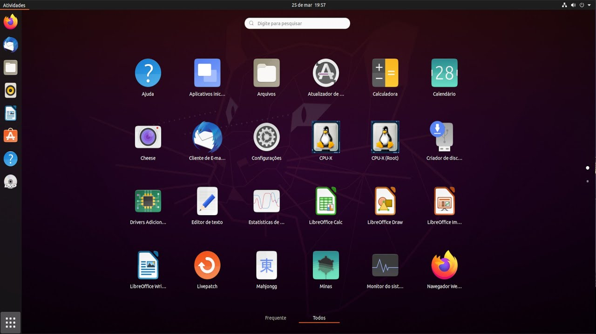

Ubuntu
O Ubuntu é um sistema operacional de código aberto baseado em Linux que se tornou amplamente popular por sua facilidade de uso, estabilidade e forte comunidade de desenvolvedores e usuários. Ele é projetado para ser uma alternativa gratuita e de código aberto aos sistemas operacionais comerciais, como Windows e macOS. Aqui estão alguns pontos-chave sobre o Ubuntu:
Origem e Distribuição: O Ubuntu foi lançado em 2004 pela empresa Canonical Ltd., liderada por Mark Shuttleworth. Ele é baseado na distribuição Debian, outra famosa distribuição de Linux.
Filosofia e Valores: O Ubuntu segue uma filosofia baseada em software livre e código aberto. A palavra "Ubuntu" vem de uma língua africana e significa "humanidade para os outros". Isso reflete o compromisso da comunidade Ubuntu em promover a colaboração, acessibilidade e distribuição igualitária de software.
Versões e Ciclo de Lançamento: O Ubuntu possui duas versões principais: uma versão de lançamento regular (com lançamentos a cada seis meses) e uma versão LTS (Long-Term Support) a cada dois anos. As versões LTS são projetadas para oferecer suporte prolongado (geralmente cinco anos) com foco na estabilidade e confiabilidade.
Ambiente de Desktop: O Ubuntu usa o ambiente de desktop GNOME por padrão, proporcionando uma interface limpa, moderna e intuitiva para os usuários. No entanto, existem várias "sabores" do Ubuntu que usam diferentes ambientes de desktop, como o KDE Plasma, o Xfce e outros.
Software Center: O Ubuntu Software Center (ou Centro de Software do Ubuntu) é uma ferramenta que permite aos usuários navegar, instalar e gerenciar aplicativos e programas em seu sistema. Ele facilita a instalação de software a partir de uma ampla gama de categorias.
Terminal e Linha de Comando: O Ubuntu, como outras distribuições Linux, oferece uma interface de linha de comando poderosa e flexível, permitindo que os usuários executem tarefas complexas, gerenciem arquivos, instalem pacotes e muito mais.
Comunidade Ativa: A comunidade Ubuntu é grande e ativa. Há fóruns, wikis, blogs e outros recursos online onde os usuários podem obter suporte, compartilhar conhecimento e colaborar em projetos.
Desenvolvimento e Personalização: O Ubuntu é altamente personalizável e é frequentemente usado por desenvolvedores para construir sistemas especializados, servidores, estações de trabalho e muito mais.
O Ubuntu é uma escolha popular tanto para usuários iniciantes quanto para avançados no mundo do Linux. Ele oferece uma experiência de usuário amigável, uma grande variedade de aplicativos e uma base sólida para tarefas variadas, desde navegar na web até desenvolver software e administrar servidores.
Baixar Iso Ubuntu